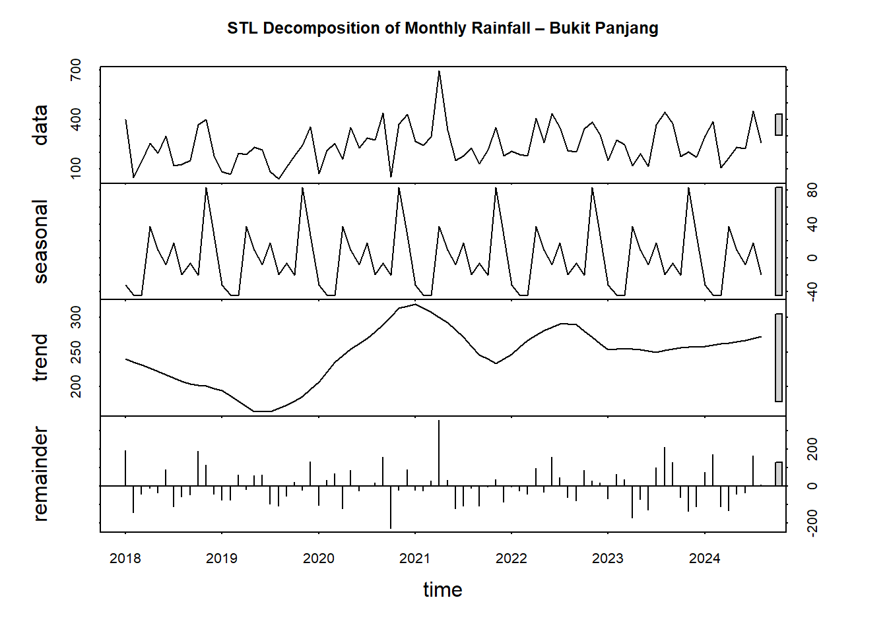
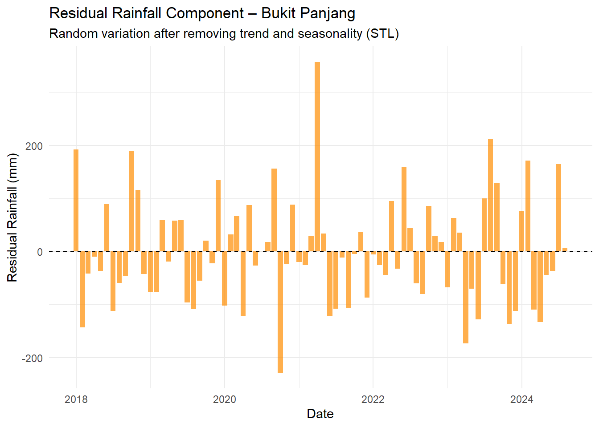
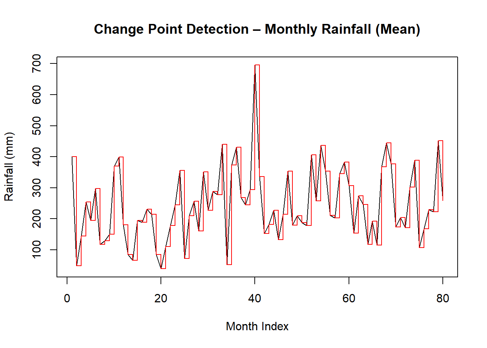
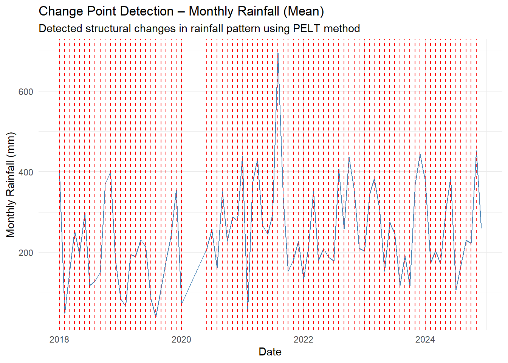
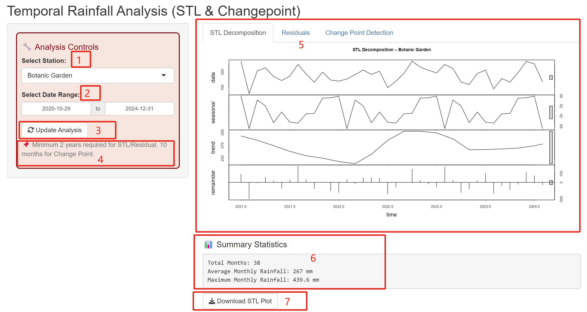

pacman::p_load(tidyverse, lubridate, SmartEDA,
ggplot2, DataExplorer, dplyr, ggmap,
ggstatsplot, zoo, forecast, changepoint)Take-home_Ex03a
Temporal Rainfall Analysis
1. Introduction
Rainfall variability has significant implications for flood risk management and urban planning, especially in tropical regions such as Singapore where monsoonal patterns govern seasonal rainfall distribution. This module, Temporal Rainfall Analysis, focuses on examining the temporal characteristics of rainfall to uncover underlying patterns and detect meaningful changes over time.
Two key analytical techniques are implemented in this module:
Seasonal Decomposition: This technique decomposes the rainfall time series into three components — trend, seasonality, and residuals. By isolating these elements, we can better understand the influence of monsoons, detect periodic rainfall patterns, and identify any irregular fluctuations in the data. Seasonal decomposition also provides insights into whether certain months or seasons consistently contribute to higher rainfall intensity.
Change Point Detection: This method aims to identify structural shifts or abrupt changes in the rainfall time series. Such changes may indicate the impact of external factors such as climate change, urbanisation, or policy interventions. Detecting these change points allows us to quantify long-term shifts in precipitation trends and provides a foundation for adaptive planning and forecasting.
Together, these techniques provide a comprehensive understanding of temporal rainfall dynamics, supporting better decision-making in flood mitigation and environmental policy formulation.
2. Data Preparation
2.1 Installing and Launching the Required R Packages
2.2 Loading data
weather <- read.csv("data/weather_data.csv")
active_stations <- read.csv("data/active_rainfall_stations.csv")2.3 Cleaning data
# Remove () for consistent naming
weather$Station <- gsub("[()]", "", trimws(as.character(weather$Station)))
active_stations$Station.Name <- gsub("[()]", "", trimws(as.character(active_stations$Station.Name)))
# Filter for active stations
weather_active <- weather %>%
filter(Station %in% active_stations$Station.Name)
# Select relevant columns for EDA
weather_active <- weather_active %>%
select(
Station, Year, Month, Day,
Daily.Rainfall.Total..mm.,
Highest.30.Min.Rainfall..mm.,
Highest.60.Min.Rainfall..mm.,
Highest.120.Min.Rainfall..mm.,
Mean.Temperature..Â.C.,
Maximum.Temperature..Â.C.,
Minimum.Temperature..Â.C.,
Mean.Wind.Speed..km.h.,
Max.Wind.Speed..km.h.,
) %>%
filter(!is.na(Daily.Rainfall.Total..mm.)) %>%
merge(active_stations, by.x = "Station", by.y = "Station.Name") %>%
select(
Station, Year, Month, Day,
Daily.Rainfall.Total..mm.,
Highest.30.Min.Rainfall..mm.,
Highest.60.Min.Rainfall..mm.,
Highest.120.Min.Rainfall..mm.,
Mean.Temperature..Â.C.,
Maximum.Temperature..Â.C.,
Minimum.Temperature..Â.C.,
Mean.Wind.Speed..km.h.,
Max.Wind.Speed..km.h.,
Latitude, Longitude
) %>%
mutate(
Date = make_date(Year, Month, Day),
Station = as.factor(Station),
# Add Monsoon Season Label
Season = case_when(
Month %in% c(12, 1, 2) | (Month == 3 & Day <= 15) ~ "Northeast Monsoon",
(Month == 3 & Day > 15) | Month %in% c(4, 5) ~ "Inter-monsoon I",
Month %in% c(6, 7, 8, 9) ~ "Southwest Monsoon",
Month %in% c(10, 11) ~ "Inter-monsoon II",
TRUE ~ "Unknown"
),
Season = factor(Season, levels = c("Northeast Monsoon", "Inter-monsoon I", "Southwest Monsoon", "Inter-monsoon II"))
) %>%
arrange(Station, Date)# all variables EDA (descriptive statistical)
weather_active %>% ExpData(type = 1) Descriptions Value
1 Sample size (nrow) 64853
2 No. of variables (ncol) 17
3 No. of numeric/interger variables 14
4 No. of factor variables 2
5 No. of text variables 0
6 No. of logical variables 0
7 No. of identifier variables 0
8 No. of date variables 1
9 No. of zero variance variables (uniform) 0
10 %. of variables having complete cases 52.94% (9)
11 %. of variables having >0% and <50% missing cases 17.65% (3)
12 %. of variables having >=50% and <90% missing cases 0% (0)
13 %. of variables having >=90% missing cases 29.41% (5)weather_active %>% ExpData(type = 2) Index Variable_Name Variable_Type Sample_n Missing_Count
1 1 Station factor 64853 0
2 2 Year numeric 64853 0
3 3 Month numeric 64853 0
4 4 Day numeric 64853 0
5 5 Daily.Rainfall.Total..mm. numeric 64853 0
6 6 Highest.30.Min.Rainfall..mm. numeric 64506 347
7 7 Highest.60.Min.Rainfall..mm. numeric 64485 368
8 8 Highest.120.Min.Rainfall..mm. numeric 64485 368
9 9 Mean.Temperature..Â.C. numeric 0 64853
10 10 Maximum.Temperature..Â.C. numeric 0 64853
11 11 Minimum.Temperature..Â.C. numeric 0 64853
12 12 Mean.Wind.Speed..km.h. numeric 0 64853
13 13 Max.Wind.Speed..km.h. numeric 0 64853
14 14 Latitude numeric 64853 0
15 15 Longitude numeric 64853 0
16 16 Date Date 64853 0
17 17 Season factor 64853 0
Per_of_Missing No_of_distinct_values
1 0.000 27
2 0.000 7
3 0.000 12
4 0.000 31
5 0.000 679
6 0.005 346
7 0.006 450
8 0.006 542
9 1.000 0
10 1.000 0
11 1.000 0
12 1.000 0
13 1.000 0
14 0.000 27
15 0.000 27
16 0.000 2557
17 0.000 43.Seasonal Decomposition
STL Decomposition of Monthly Rainfall
# select Bukit Panjang for analysis
station_data <- weather_active %>%
filter(Station == "Bukit Panjang") %>%
group_by(Date) %>%
summarise(DailyRainfall = sum(Daily.Rainfall.Total..mm.)) %>%
arrange(Date)
monthly_rainfall <- station_data %>%
mutate(YearMonth = floor_date(Date, "month")) %>%
group_by(YearMonth) %>%
summarise(MonthlyRainfall = sum(DailyRainfall))
rain_ts <- ts(monthly_rainfall$MonthlyRainfall,
start = c(year(min(monthly_rainfall$YearMonth)), month(min(monthly_rainfall$YearMonth))),
frequency = 12)
rain_stl <- stl(rain_ts, s.window = "periodic")
plot(rain_stl, main = "STL Decomposition of Monthly Rainfall – Bukit Panjang")
The STL decomposition of monthly rainfall at Bukit Panjang reveals strong seasonality, with higher rainfall consistently occurring around November and December, reflecting the Northeast Monsoon’s influence.
The trend component shows a decline from 2018 to mid-2020, followed by a sharp increase peaking around 2021. This may be attributed to recent climate shifts or land use changes impacting precipitation intensity.
The remainder component indicates several significant anomalies in rainfall data, highlighting extreme weather events that deviate from the expected seasonal and trend patterns.
Residual Rainfall Component
remainder_component <- rain_stl$time.series[, "remainder"]
residual_df <- data.frame(
Date = seq.Date(from = min(monthly_rainfall$YearMonth),
by = "month",
length.out = length(remainder_component)),
Residual = as.numeric(remainder_component)
)library(ggplot2)
ggplot(residual_df, aes(x = Date, y = Residual)) +
geom_col(fill = "darkorange", alpha = 0.7) +
geom_hline(yintercept = 0, color = "black", linetype = "dashed") +
labs(
title = "Residual Rainfall Component – Bukit Panjang",
subtitle = "Random variation after removing trend and seasonality (STL)",
x = "Date",
y = "Residual Rainfall (mm)"
) +
theme_minimal()
4.Change Point Detection
To identify structural shifts in rainfall trends over time, we applied the PELT method using the changepoint package. The analysis was conducted on the monthly aggregated rainfall data for Bukit Panjang.
The figure below highlights the detected change points (red dashed lines), which indicate statistically significant changes in the average monthly rainfall level.
monthly_data <- monthly_rainfall$MonthlyRainfallcpt_mean <- cpt.mean(monthly_data, method = "PELT")
plot(cpt_mean, main = "Change Point Detection – Monthly Rainfall (Mean)", xlab = "Month Index", ylab = "Rainfall (mm)")
change_index <- cpts(cpt_mean)
change_dates <- monthly_rainfall$YearMonth[change_index]
ggplot(monthly_rainfall, aes(x = YearMonth, y = MonthlyRainfall)) +
geom_line(color = "steelblue") +
geom_vline(xintercept = as.numeric(change_dates), linetype = "dashed", color = "red") +
labs(
title = "Change Point Detection – Monthly Rainfall (Mean)",
subtitle = "Detected structural changes in rainfall pattern using PELT method",
x = "Date", y = "Monthly Rainfall (mm)"
) +
theme_minimal()
5.storyboard
Storyboard aims to visually maps out user’s experience. It is a tool for making strong visual connection between the insights uncovered based on research and user’s interaction with the R Shiny dashboard application.
The storyboard like the graph below

Code chunk below shows the simplified version of UI and Server components in R Shiny application
Show code
library(shiny)
library(dplyr)
library(lubridate)
library(ggplot2)
library(forecast)
library(changepoint)
# Load data
weather_data <- read.csv("data/weather_data.csv")
active_stations <- read.csv("data/active_rainfall_stations.csv")
# Clean station names
weather_data$Station <- gsub("[()]", "", trimws(as.character(weather_data$Station)))
active_stations$Station.Name <- gsub("[()]", "", trimws(as.character(active_stations$Station.Name)))
# Filter active stations
weather_active <- weather_data %>%
filter(Station %in% active_stations$Station.Name) %>%
mutate(Date = make_date(Year, Month, Day)) %>%
filter(!is.na(Daily.Rainfall.Total..mm.))
# UI ----------------------------------------------------------
ui <- fluidPage(
titlePanel("Temporal Rainfall Analysis (STL & Changepoint)"),
sidebarLayout(
sidebarPanel(
div(style = "border: 2px solid #8B0000; background-color: #F8E6E0; padding: 10px; border-radius: 8px;",
h4("🔧 Analysis Controls", style = "color: #8B0000;"),
selectInput("station", "Select Station:",
choices = unique(weather_active$Station),
selected = "Bukit Panjang"),
dateRangeInput("date_range", "Select Date Range:",
start = min(weather_active$Date),
end = max(weather_active$Date)),
actionButton("update", "Update Analysis", icon = icon("sync")),
helpText("📌 Minimum 2 years required for STL/Residual. 10 months for Change Point.")
)
),
mainPanel(
tabsetPanel(
tabPanel("STL Decomposition", plotOutput("stlPlot")),
tabPanel("Residuals", plotOutput("residualPlot")),
tabPanel("Change Point Detection", plotOutput("cptPlot"))
),
br(),
h4("📊 Summary Statistics"),
verbatimTextOutput("summaryBox"),
downloadButton("downloadPlot", "Download STL Plot")
)
)
)
# SERVER -------------------------------------------------------
server <- function(input, output, session) {
# Trigger only after "Update" button is clicked
filtered_data <- eventReactive(input$update, {
weather_active %>%
filter(Station == input$station,
Date >= input$date_range[1],
Date <= input$date_range[2]) %>%
group_by(Date) %>%
summarise(DailyRainfall = sum(Daily.Rainfall.Total..mm.)) %>%
arrange(Date)
})
monthly_rain <- reactive({
filtered_data() %>%
mutate(YearMonth = floor_date(Date, "month")) %>%
group_by(YearMonth) %>%
summarise(MonthlyRainfall = sum(DailyRainfall))
})
rain_ts <- reactive({
ts(monthly_rain()$MonthlyRainfall,
start = c(year(min(monthly_rain()$YearMonth)), month(min(monthly_rain()$YearMonth))),
frequency = 12)
})
# STL Decomposition
output$stlPlot <- renderPlot({
req(input$update) # Ensure update clicked
if (nrow(monthly_rain()) < 24) {
plot.new()
title(main = "⛔ Data too short for STL Decomposition.\nPlease select at least 2 years of data.")
} else {
rain_stl <- stl(rain_ts(), s.window = "periodic")
plot(rain_stl, main = paste("STL Decomposition –", input$station))
}
})
# Residual Plot
output$residualPlot <- renderPlot({
req(input$update)
if (nrow(monthly_rain()) < 24) {
plot.new()
title(main = "⛔ Not enough data for residual analysis.\nPlease select at least 2 years of data.")
} else {
rain_stl <- stl(rain_ts(), s.window = "periodic")
remainder_component <- rain_stl$time.series[, "remainder"]
df <- data.frame(
Date = seq.Date(from = min(monthly_rain()$YearMonth),
by = "month",
length.out = length(remainder_component)),
Residual = as.numeric(remainder_component)
)
ggplot(df, aes(x = Date, y = Residual)) +
geom_col(fill = "darkorange", alpha = 0.7) +
geom_hline(yintercept = 0, color = "black", linetype = "dashed") +
labs(
title = paste("Residual Rainfall –", input$station),
subtitle = "Random variation after removing trend and seasonality",
x = "Date", y = "Residual (mm)"
) +
theme_minimal()
}
})
# Change Point Detection
output$cptPlot <- renderPlot({
req(input$update)
if (nrow(monthly_rain()) < 10) {
plot.new()
title(main = "⛔ Not enough data for Change Point Detection.\nPlease select at least 10 months of data.")
} else {
rain_vals <- monthly_rain()$MonthlyRainfall
cpt <- cpt.mean(rain_vals, method = "PELT")
change_dates <- monthly_rain()$YearMonth[cpts(cpt)]
ggplot(monthly_rain(), aes(x = YearMonth, y = MonthlyRainfall)) +
geom_line(color = "steelblue") +
geom_vline(xintercept = as.numeric(change_dates),
linetype = "dashed", color = "blue") +
labs(
title = paste("Change Point Detection –", input$station),
subtitle = "Detected mean shifts using PELT method",
x = "Date", y = "Monthly Rainfall (mm)"
) +
theme_minimal()
}
})
# Summary Box
output$summaryBox <- renderPrint({
req(input$update)
df <- monthly_rain()
if (nrow(df) == 0) {
cat("No data available.")
} else {
cat("Total Months:", nrow(df), "\n")
cat("Average Monthly Rainfall:", round(mean(df$MonthlyRainfall), 2), "mm\n")
cat("Maximum Monthly Rainfall:", round(max(df$MonthlyRainfall), 2), "mm")
}
})
# Download Button handler
output$downloadPlot <- downloadHandler(
filename = function() {
paste0("STL_Plot_", input$station, ".png")
},
content = function(file) {
png(file, width = 900, height = 600)
rain_stl <- stl(rain_ts(), s.window = "periodic")
plot(rain_stl, main = paste("STL Decomposition –", input$station))
dev.off()
}
)
}Temporal Rainfall Analysis – User Guide
Analysis Controls Panel
This section allows users to set the input parameters for the analysis.
[1] Select Station: Use the dropdown menu to select one of the 27 active rainfall monitoring stations (e.g., Botanic Garden).
[2] Select Date Range: Define the desired analysis period.
*A minimum of 2 years is required to perform STL Decomposition and Residual Analysis.
*A minimum of 10 months is required for Change Point Detection.
[3] Update Analysis: Click the Update Analysis button to apply the selected filters. All charts and outputs will refresh based on your selection.
[4] Note Reminder: This section provides a helpful reminder of the minimum data length required for each analysis technique.
Analysis Tabs
Results are organized under three main tabs:
[5]
STL Decomposition:
Decomposes monthly rainfall data into trend, seasonal, and residual components.This helps identify monsoon seasonality—especially the Northeast Monsoon peak between November and December.
Residuals:
Displays the remaining variability after removing seasonality and trend. This allows users to detect anomalies or extreme rainfall events.
Change Point Detection:
Identifies statistically significant shifts in mean rainfall over time.This can indicate long-term climate trends or sudden changes due to urbanization or environmental factors.
Summary Statistics
[6] Summary Box: Below the analysis plots, users can find an automatically generated summary, including: Total number of months, Average monthly rainfall (mm), Maximum monthly rainfall (mm)
This helps users quickly interpret rainfall magnitude over the selected period.
Download Feature
[7] Download STL Plot: Users can download the STL decomposition plot in PNG format for use in presentations, reports, or further documentation